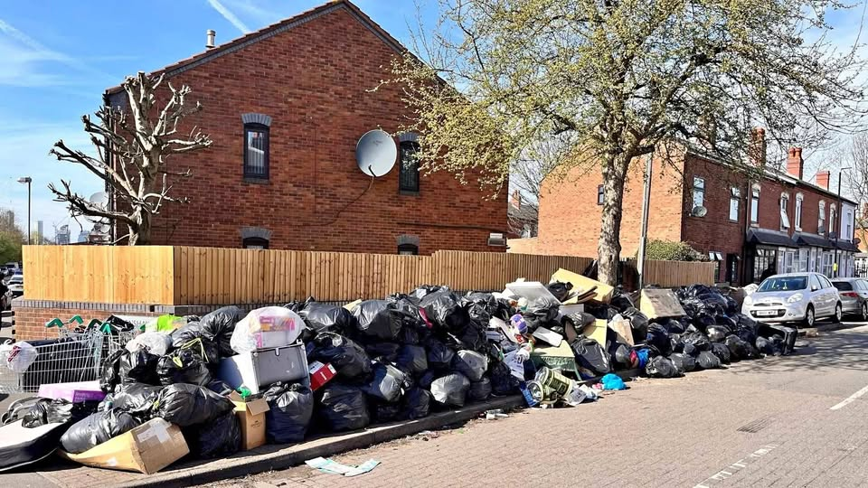

01 / CLEAR
Rubbish & waste removal
For unwanted household items, bulky waste, garden rubbish and general clear-outs. We do the lifting and get the space cleared.
- House & property clearances
- Bulky items & unwanted furniture
- Garden waste & outdoor rubbish
- General rubbish removal
